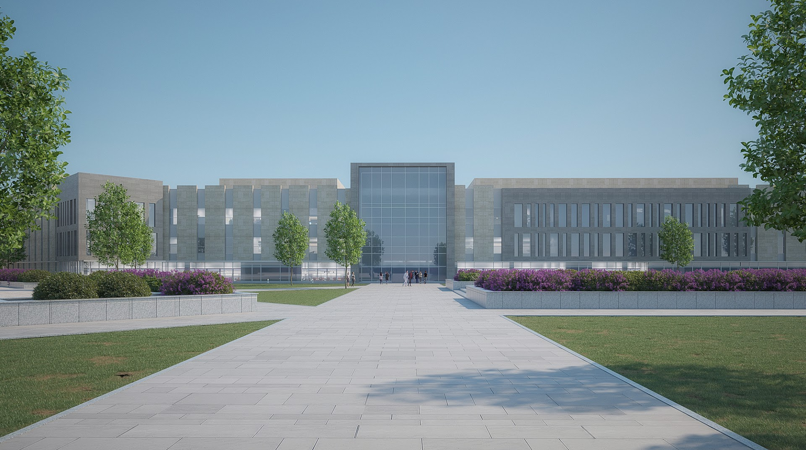
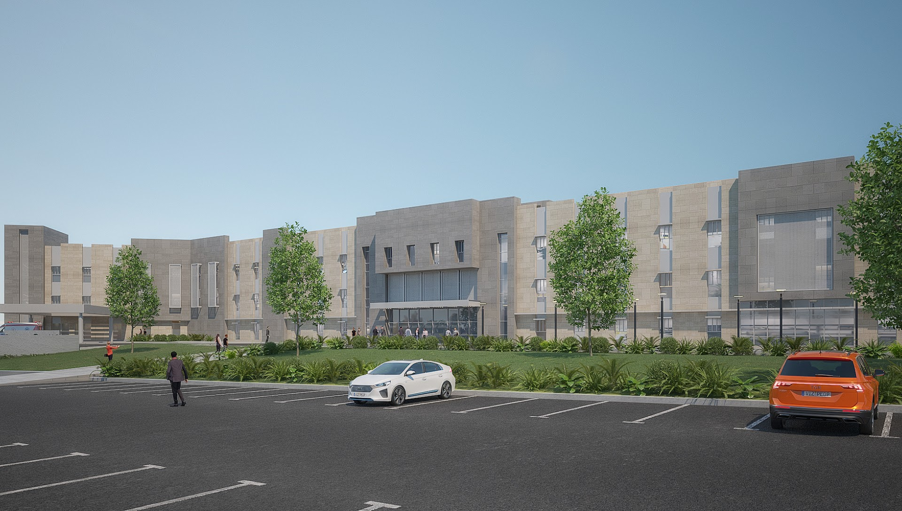

New Minya, Egypt
The Deraya University Hospital is a 201-bed, state-of-the-art facility located on a 7,950 m² footprint with a total built-up area of 34,600 m² across four levels.
The basement houses parking, kitchen, laundry, CSSD, workshops, storage, and staff facilities. The ground floor features a grand triple-height atrium with waiting area and cafeteria, alongside the outpatient clinic, emergency department, laboratory, radiology, and administration.
The upper floors accommodate the cardiac catheterization lab, dialysis department, delivery department, six operating rooms, ICU wards, NICU, and staff residences. The modern exterior features marble and aluminum cladding with carefully-sized openings and sun-breakers to reduce solar gain.

